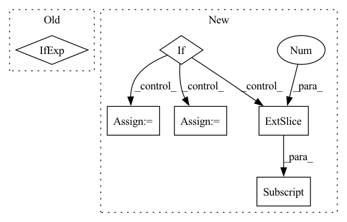

Pattern ID :4284
Before Change
res = {
"accuracy": accuracy_score(y_true, y_pred),
"auc": roc_auc_score(y_true, auc_scores).astype(float) if len(set(y_true)) > 1 else .5,
"precision": precision_score(y_true, y_pred, zero_division=0),
"recall": recall_score(y_true, y_pred, zero_division=0),
"f1_score": f1_score(y_true, y_pred, zero_division=0)After Change
"f1_score": f1_score(y_true, y_pred, zero_division=0)
}
if scores.shape[1] == 2:
auc_scores = scores[:, 1] .detach().cpu().numpy().flatten()
if len(set(y_true)) == 2:
res["auc"] = roc_auc_score(y_true, auc_scores).astype(float)
else:
res["auc"] = 0.5 //TODO: warning
return res
In pattern: SUPERPATTERN
Frequency: 3
Non-data size: 6
Instances Fragment ID: 15600110
Project Name: makgyver/gossipy
Commit Name: 31a93a404f8bfba3869c5eb733962a438f4806f0
Time: 2021-08-29
Author: mak1788@gmail.com
File Name: gossipy/model/handler.py
M Class Name: TorchModelHandler
N Class Name: TorchModelHandler
M Method Name: evaluate(2)
N Method Name: evaluate(2)
M Parent Class: ModelHandler
N Parent Class: ModelHandler
M File Name: gossipy/model/handler.py
N File Name: gossipy/model/handler.py
M Start Line: 93
M End Line: 103
N Start Line: 99
N End Line: 123
Before Change
// some of the encoder model doesnt output the pooler output. It has to be made from hidden state
//ouputs in those cases
sequenceOutput = outputs[0]
pooledOutput = outputs[1] if len(outputs) >1 else self.make_pooler_output(sequenceOutput)
taskType = self.taskParams.taskTypeMap[self.taskParams.taskIdNameMap[taskId]]
if taskType == TaskType.Span:After Change
// some of the encoder model doesnt output the pooler output. It has to be made from hidden state
//ouputs in those cases
sequenceOutput = outputs[0]
if len(outputs) > 1:
pooledOutput = outputs[1]
else:
pooledOutput = nn.ReLU()(self.poolerLayer(sequenceOutput[:, 0] ))
//pooledOutput = outputs[1] if len(outputs) >1 else self.make_pooler_output(sequenceOutput)
Fragment ID: 15600111
Project Name: hellohaptik/multi-task-nlp
Commit Name: 434af597e1f2dd437d60e963d98b9db78222fcdf
Time: 2020-04-20
Author: mehtasaransh614@gmail.com
File Name: models/model.py
M Class Name: multiTaskNetwork
N Class Name: multiTaskNetwork
M Method Name: forward(5)
N Method Name: forward(5)
M Parent Class: nn.Module
N Parent Class: nn.Module
M File Name: models/model.py
N File Name: models/model.py
M Start Line: 107
M End Line: 108
N Start Line: 100
N End Line: 108
Before Change
if use_anchor_free_mode:
bbox_process = lambda bb: to_one_hot_with_class_mark(tf.concat([bb[0], tf.cast(tf.expand_dims(bb[1], -1), bb[0].dtype)], axis=-1), num_classes)
else:
grid_zero_start = True if anchor_grid_zero_start == "auto" else anchor_grid_zero_start
anchors = anchors_func.get_anchors(input_shape[:2], anchor_pyramid_levels, anchor_aspect_ratios, anchor_num_scales, anchor_scale, grid_zero_start)
num_anchors = anchors.shape[0]
empty_label = tf.zeros([num_anchors, 4 + num_classes + 1]) // All 0After Change
pos_aug = PositionalRandAugmentWithBboxes(magnitude, num_layers, max_labels_per_image, **augment_kwargs)
train_dataset = train_dataset.map(pos_aug, num_parallel_calls=AUTOTUNE)
if use_anchor_free_mode:
// Don"t need anchors here, anchor assigning is after getting model predictions.
bbox_process = lambda bb: to_one_hot_with_class_mark(tf.concat([bb[0], tf.cast(tf.expand_dims(bb[1], -1), bb[0].dtype)], axis=-1), num_classes)
elif use_yolor_anchors_mode:
anchor_ratios, feature_sizes = anchors_func.get_yolor_anchors(input_shape[:2], anchor_pyramid_levels, is_for_training=True)
total_anchors = tf.cast(anchor_ratios.shape[1] * tf.reduce_sum(feature_sizes[:, 0] * feature_sizes[:, 1]), tf.int32)
empty_label = tf.zeros([total_anchors, 4 + num_classes + 1]) // All 0
bbox_process = lambda bb: __yolor_bboxes_labels_batch_func__(bb[0], bb[1], anchor_ratios, feature_sizes, empty_label, num_classes)
else:
// grid_zero_start = True if anchor_grid_zero_start == "auto" else anchor_grid_zero_start
aspect_ratios, num_scales, anchor_scale, grid_zero_start = [1, 2, 0.5], 3, 4, False // Use this till meet some others new Fragment ID: 15600107
Project Name: leondgarse/keras_cv_attention_models
Commit Name: df3cf1ce0ac4b02a9c73496b1a583b9a892c7b0a
Time: 2022-03-25
Author: leondgarse@gmail.com
File Name: keras_cv_attention_models/coco/data.py
M Class Name: AnonimousClass
N Class Name: AnonimousClass
M Method Name: init_dataset(18)
N Method Name: init_dataset(19)
M Parent Class:
N Parent Class:
M File Name: keras_cv_attention_models/coco/data.py
N File Name: keras_cv_attention_models/coco/data.py
M Start Line: 363
M End Line: 425
N Start Line: 376
N End Line: 447